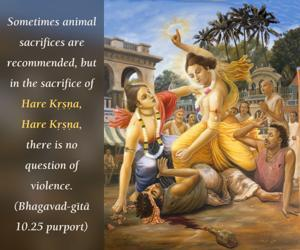
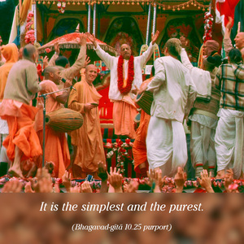

Of the great sages I am Bhṛgu; of vibrations I am the transcendental oṁ. Of sacrifices I am the chanting of the holy names [japa], and of immovable things I am the Himālayas.


Brahmā, the first living creature within the universe, created several sons for the propagation of various kinds of species. Among these sons, Bhṛgu is the most powerful sage. Of all the transcendental vibrations, oṁ (oṁ-kāra) represents Kṛṣṇa. Of all sacrifices, the chanting of Hare Kṛṣṇa, Hare Kṛṣṇa, Kṛṣṇa Kṛṣṇa, Hare Hare/ Hare Rāma, Hare Rāma, Rāma Rāma, Hare Hare is the purest representation of Kṛṣṇa. Sometimes animal sacrifices are recommended, but in the sacrifice of Hare Kṛṣṇa, Hare Kṛṣṇa, there is no question of violence. It is the simplest and the purest. Whatever is sublime in the worlds is a representation of Kṛṣṇa. Therefore the Himālayas, the greatest mountains in the world, also represent Him. The mountain named Meru was mentioned in a previous verse, but Meru is sometimes movable, whereas the Himālayas are never movable. Thus the Himālayas are greater than Meru.